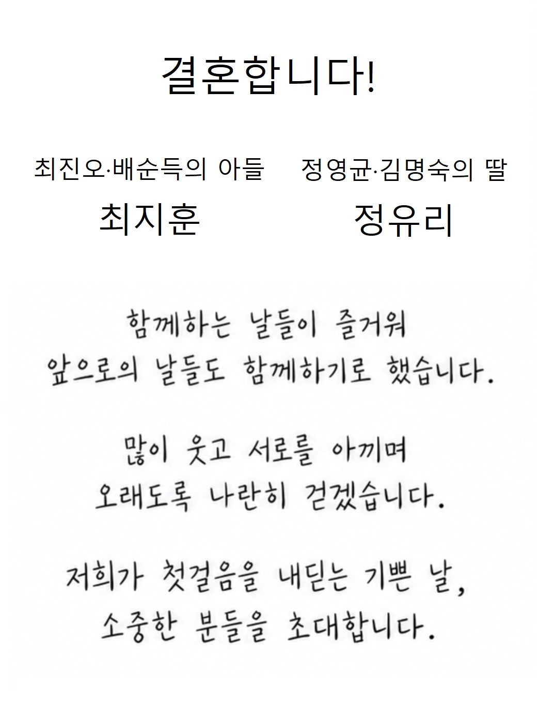
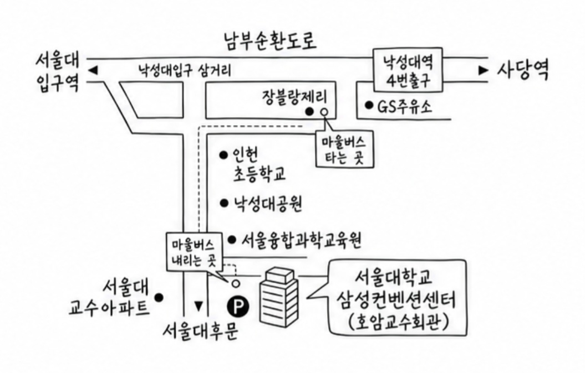

WEDDING INVITATION
신랑 이름 & 신부 이름
OUR BEGINNING
두 사람의 사진이
들어갈 자리
들어갈 자리
예식 날짜 · 시간 입력
예식장 이름 · 홀 입력
INVITATION

YEAR
00.00
TIME
우리의 시작까지
—DAYS
—HOURS
—MINUTES
—SECONDS
WITH OUR FAMILIES
GROOM
BRIDE
GALLERY
우리의 이야기
LOCATION
오시는 길

주차 안내
ACCOUNT
마음 전하실 곳
함께해 주시는 따뜻한 마음에 감사드립니다.
전해 주신 축복을 소중히 간직하겠습니다.
신랑측
신부측
THANK YOU
우리의 시작을 함께해 주세요
귀한 걸음으로 축복해 주시는 마음,
오래도록 기억하며 행복하게 살겠습니다.